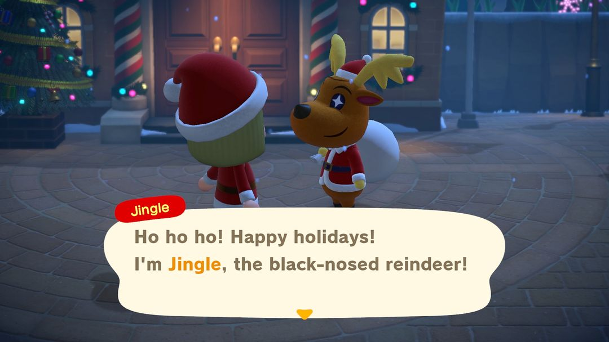
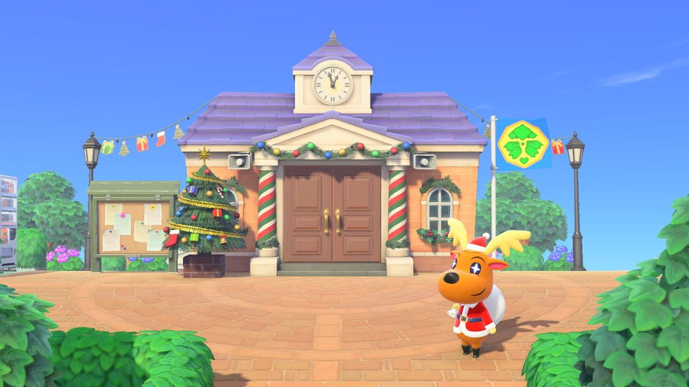

圣诞节：帮铃铃鹿送礼物
12 月 24 日当天的流程，和之前要攒的装饰品、DIY手册
游戏里这个节日就叫「圣诞节」，每年 12 月 24 日，南北半球同一天，从早上 5 点一直到第二天早上 5 点。主角是黑鼻子驯鹿铃铃鹿，圣诞老人的助手。他一个人忙不过来，会请你帮忙把礼物送到每位岛民手里，送完了有一架圣诞雪橇作谢礼。
当天要先交 3 张圣诞包装纸才能开工，做包装纸要红、蓝、金三色装饰品，而装饰品只能从 12 月 15 日起摇针叶树攒。所以真正要提前动手的是 15 号到 23 号这几天，24 号当天只管送礼物。

铃铃鹿（英文版画面）（图：任天堂宣传图，经 Nookipedia）
0112 月里的几个日子
整个 12 月跟圣诞节有关的日子都排在下面。12 月 1 日起商店就换上了圣诞的货，15 日针叶树挂上装饰以后，就可以开始攒装饰品了。
| 日期 | 发生什么 |
| 12/1 起 | Nook商店卖圣诞玩具，ABLE SISTERS 卖圣诞服装，到 25 日为止 |
| 12/15 | 针叶树挂上装饰，摇树掉装饰品；西施惠寄来一份圣诞DIY手册 |
| 12/24 | 圣诞节当天，5:00 到次日 5:00 |
| 12/25 – 1/1 | 碰挂好的圣诞壁挂式袜子，拿铃铃鹿的照片 |
| 次年 1/6 | 装饰品季结束 |
南半球的日期完全一样，只是那时正是夏天：北半球当天下一整天的雪，南半球是大晴天，连背景音乐都不一样。
0224 日当天怎么送礼物
当天的流程是固定的，按顺序做下来就行：
1. 到服务处门口找铃铃鹿。他会教你「圣诞包装纸」的DIY手册，请你做 3 张交给他。
2. 每张包装纸要红色、蓝色、金色装饰品各 1 个，3 张就是每色 3 个。交齐以后，他会送你圣诞壁挂式袜子，再把礼物袋交到你手上。
3. 把礼物袋拿出来背在身上，走到岛民跟前说话，就能把礼物递过去。谁收哪份礼物是自动分好的，不用去猜岛民喜欢什么。跟你关系好的岛民收下礼物，还会回赠你一件玩具。
4. 送出一半时回去找铃铃鹿，他会教你「礼物堆」的DIY手册；全部送完再去找他，就能领到圣诞雪橇，礼物袋也由他收回。
背着礼物袋挨家送（图：任天堂宣传图，经 Nookipedia）
岛民白天四处走动，送到最后总有几位一时找不着。
小提示袋里只剩 3 份时，查看一下礼物袋，上面会直接列出还没收到礼物的岛民，照着名字去找，不用满岛乱转。
送完以后还能交换礼物
礼物都送到了，还可以再跟岛民换一轮：随便挑一件东西用包装纸包好，送给岛民，对方会回你一件圣诞玩具，颜色和商店里卖的不一样，想收集不同配色的可以多换几位。每位岛民当天只换一次。
要是在 ABLE SISTERS 把圣诞帽、圣诞老人胡子、圣诞老人外套和圣诞裤都买齐穿上，岛民见了会说你像圣诞老人。
03攒装饰品，学圣诞 DIY
12 月 15 日到 1 月 6 日，岛上的针叶树会挂满彩灯。摇一摇树，就会掉下红、蓝、金三色的装饰品。24 日之前每种颜色至少攒够 3 个，不然当天做不出包装纸，礼物也就送不成。
圣诞家具的DIY手册，可以射气球打下来，也可以去岛民家串门，碰上正在做 DIY 的岛民时跟着学。15 日那天西施惠也会寄来一份。
12 月 15 日起针叶树挂上装饰（图：Nookipedia）
下面是几样圣诞家具要用的装饰品数量。做之前先对一下表，免得把包装纸要用的那几个也耗掉。
| DIY手册 | 装饰品（红 / 蓝 / 金） |
| 圣诞包装纸 | 1 / 1 / 1 |
| 大型圣诞树 | 6 / 6 / 4，另要木材、黏土 |
| 可爱圣诞树 | 3 / 3 / 2，另要木材 |
| 圣诞节地毯、圣诞墙 | 各 5 / 5 / 5，圣诞墙另要黏土 |
| 特大装饰品 | 10 / 0 / 0 |
| 装饰花环 | 0 / 6 / 2 |
| 驯鹿灯饰 | 0 / 0 / 6，另要铁矿石 |
礼物堆用不到装饰品，材料是红色包装纸 3、积木玩具 1、纸箱 1。
0412 月 Nook商店的玩具
12 月 1 日到 25 日，Nook商店的货架上会摆出圣诞玩具，价钱如下：
| 玩具 | 铃钱 |
| 儿童帐篷 | 4,500 |
| 娃娃屋 | 4,000 |
| 迷你赛车场 | 3,800 |
| 遥控直升机 | 3,600 |
| 铁皮机器人 | 3,500 |
| 恐龙玩具、狗狗玩偶 | 各 2,400 |
| 立体绘本、壁挂式袜子 | 各 2,000 |
05几个小技巧
金色装饰品最容易缺。圣诞树、灯饰都要用金色，摇到的先留 3 个给包装纸，多出来的再拿去做家具。
摇树前先拿好捕虫网。摇针叶树也可能掉下蜂巢，黄蜂会追着你蜇，手里握着网子能及时捉住。
25 日早上 5 点前送完。一过 5 点，铃铃鹿和礼物袋就都不在了，礼物没送完也领不到雪橇。

南半球的圣诞节是晴天（图：Nookipedia）
062.0 / 3.0 有什么变化
2.0 起，岛民正在做的圣诞DIY手册要是你已经学过，就不再教你，改送 3 个随机颜色的装饰品，跟万圣节改送南瓜是一个道理。
2.0 以后节日每年会自动到来，不用再等更新。3.0 的更新说明里没提到圣诞节有改动。
动森圈圈 · 小程序和 iOS App 都搜「动森圈圈」